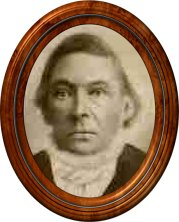

|
CHAPTER 4 PART 1

"PIONEER"
THE LIFE OF JOHN NELSON WAKLEY
John Nelson Wakley was born December 26, 1819 in the Township of Bastard, County of Leeds, District of Ontario, Canada. He was the younger child of Nathan and Susan Wakley, having eight sisters and one brother older than himself.
His home environment may not have been best for intoxicating drinks were served as we serve Water. Also, his schooling was neglected, being unable to read or write up to the time he left home. Perhaps this was due to living a great distance from school and having poor health.
When John was about nine years old he became a very sick boy. Even in this enlightened age, inflammatory rheumatism and dropsy have no sure cures. They yet baffle the experts. In that day the treatment was calomel pills and starvation. He told of many months of starvation and how his teeth were ready to drop from his mouth from being salivated. No wonder a childish rebellion grew daily in his heart, against the Doctor and his pills.
Finally one day he saw his mother put a custard pie and a pitcher of butter in the cupboard. As soon as he was alone he hobbled over to the cupboard and ate the pie and drank the pitcher of buttermilk, which must have tasted very delicious to a starving child. When his mother discovered what he had done she became very excited, but he only had one answer and that was if he died it would be on a full stomach. By refusing pills, his mother declared he was endangering his life. This was the first time John risked his life for his convictions, but not the last. He later followed a trail where life was counted cheap when defending and promulgating the truth.
Many days of each youthful year John must have spent loitering in the nearby woods, watching the birds and animals, for all of his stories revealed him as a keen student of nature. All of his life he loved the great out-of-doors. He spent a shiftless life, no school and not much work, and he lazily dreamed of going adventuring. No wonder when his friends, the Doke family, joined the Mormon exodus from Canada, he went along with them--along with a song in his heart. He was going to see the world. Unafraid of hardships, unafraid of leaving the shelter and love of his home, unafraid to follow the trail of his dreams. He thought, with sorrow, of his Mother's grief over his going, but he refused to turn back. Perhaps an all wise providence was guiding him along that trail in order that his progenitor's posterity might receive a blessing.
The brief story of John's Adventures as told by him:
When I left my home with the Doke family I was about eighteen years old. Under the leadership of John E. Page, thirty Mormon families started for Missouri. We crossed the St. Lawrence River on the ice and stayed in the Chippewa Bay until spring. Then we proceeded on our way.
Upon arriving at DeWitt, a town about fifty miles from Far West, we were told by Colonel George M. Hinkle, residing in that place, that Joseph Smith desired us to remain in DeWitt. The saints being dissatisfied sent one of their members to Far West to inquire the will of the Prophet. He was informed that the Prophet wished the company from Canada to proceed to Far West. The mobs were becoming so harassing that the saints were all in danger of their lives. One of the scouts, who had been sent out to ascertain the position of the mob, came back with his coat riddled by bullet, but otherwise unhurt.
Ten Scouts were kept out to watch and report the movement of the mob. They became so troublesome that the Saints decided to march against them. A small company under the leadership of Colonel Hinkle was mustered and we marched away in search of the mob.
On coming to the top of a hill north of DeWitt we were surprised by a mob of five hundred. Their fire was so sudden and intense that we were blinded by the dirt from the hill, while large branches were cut from the oat trees over head and showered amongst us. "Colonel Hinkle gave the order to retreat and all the Saints, excepting seven, ran panic stricken towards DeWitt."
'We realized that even if we reached DeWitt we together with the other families might be surrounded by the mob and murdered. John E. Page stepped forward and gave the order to "tree" and in an instant we had all scrambled up trees and were in a firing position. Shots from the mob were falling about us and we were keeping up a steady fire at them. We could not see what effect our shots were having until one of the mob, raised from behind a log to get aim at one of us, was instantly dropped by a brother by the name of Cox. At this the mob thought by coming around the hill, they might surround us without Loss to themselves.'
'They had not gone far when they came upon the ten scouts. The fire from them was such a surprise that the mob turned and ran back in our direction. We had our guns loaded and fired into there midst. This completed their panic and they ran directly for a nearby corn field.'
'We had stationed an old man by the name of Thorpe at the farther end of the corn patch with a well loaded gun and when he heard the mob crashing toward him, he fired. At the Sound of this gun they turned and ran pell-mell into the woods where their horses were tied. Each man took the first horse he came to and rode into the woods to their camps.'
"We returned to DeWitt well pleased with our days work."
'The Saints of DeWitt were now in danger of starvation on account of the closeness of the siege so they sent word to Joseph Smith for help. In a few days he, accompanied by David Patten and sixty man, came to our aid. Joseph petitioned Governor Boggs and received this reply: "The quarrel is between the Mormons and the mob and they can fight it out.'
'One night we decided to go out and encounter the mob. Colonel Hinkle was again in command and when we were drawn up near the mob and in a good position for victory, he gave the order to 'tree'. This came as a surprise to the whole company and caused great confusion, until Captain David Patten stepped forward and gave the order to retreat. He afterwards reprimanded Hinkle for his traitorous conduct."
"The Canada Saints and those who were formerly at DeWitt in the month of October 1838 gathered their movable possessions and went to Far West.'
"Soon after we reached Far West I received word that Joseph Smith wished to see me. I went to him and was greeted by these words. "Well son, I'm glad you came". He then told me he wished to send me on an important mission. I was surprised and started to explain that I did not belong to the church. He told me he knew it but he felt that I was the one he wanted as I was nearly unknown. The mission he wanted me to fulfil was to go secretly among the mob and find out their intentions toward the Saints. After being assured that I had all the provisions for such an expedition, he told me that I should be led by the spirit of God and at all tines to do as I felt best."
"As I was riding in the direction of the mob I met a very much disfigured man, his nose being almost shot from his face. I hailed him and inquired the cause of his injury and was told that he had been fighting the Mormons. He said he had made a mistake in joining the mob and only wished that he had not interfered in something that was none of his business. I went on my way rejoicing that I had seen one of the mob content to let the Mormons alone.'
'Upon reaching the camps of the mob I pretended to be in search of a good piece of land. I easily fell in with them and learned as much as I could of their plans.'
"There were one hundred Scouts on Log River under charge of Colonel Hinkle, and any time I had word to send to the Prophet I was to seek theses and send one of their number. I had sent in several reports and was going to send word again when a runner came from Joseph saying that a mob surrounding Far West. We at once set out for the place."
'Colonel Hinkle, upon arriving near Far West, said he was not going to be made a target for the mob and pulled off his uniform coat and put it in his saddle bag. He was for fighting his way through the mob, but later decided to go down the Log River and enter the west side of Far West.'
'Upon arriving there we found that Joseph Smith had used all the logs that had been hauled in to build house, to construct a protection for the south side of the city. We at once dismounted and joined the Saints behind the barricade. Joseph told us many times that he did not think there would he a shot fired and it afterwards proved true. The mob was situated on Goose Creek and three times they charged toward our barricade of logs. Each time as they got within two or three hundred yards of us they seemed to strike an invisible wall. Three times their charge ended so abruptly that many riders went over their horse's heads. After the third attempt they rode away without a shot being fired."
John Wakley had wished for adventure and as if by some magic power he was sent down in a hot bed of it. Missouri in 1838, where a people were being persecuted for their religious belief, where the hatred and derision of the country was focused upon one man, the Prophet Joseph Smith. And John had the great experience of giving service to this man. Then only a few short days after, the very sad experience of seeing his hero in the hands of the mob, and his beloved people unable to give him aid: of hearing the rejoicing of that howling mob.
John tarried a few weeks longer at Far West and then went to Fort Leavenworth and hired out for the winter. During those winter months he must have thought many times of home, for by spring he went to St. Louis and took passage on a steamer for Nauvoo where the Saints were then gathering. John was homesick and therefore anxious to be on his way. At Macedonia he heard of a debate at Columbus, between a Mormon Elder and a Methodist Minister. But John was Canada bound, so on he journeyed five miles past Columbus.
As John traveled on a desire grew in his mind to hear that debate. He wanted to see that Methodist Minister confounded by an Elder of the most unpopular Church on the earth. So John halted. On that Spot five miles past Columbus toward the Canadian border, good and evil forces must have tugged at John that day. Perhaps in all his life would never come a decision so important--important not only to himself but his progenitors and posterity, to those yet unborn. So thankful are we that John turned his face from Canada and a Catholic family to Columbus, Illinois and Mormonism.
The debate ended in favor of the Mormon Elder, but John's whole heart and soul had not been centered on the debate In the audience was a girl in a purple dress. While Methodist and Mormon indulged in heated discussion, John was wondering how he was to meet the girl.
After all it was quite simple. Polly Woodland (the girl) and her parents were Saints and after the meeting they invited the Missionary to their home. John was on hand to congratulate the Missionary and as he was a stranger, interested in Mormonism, he too was invited to their home. In less than two weeks Polly Woodland became his wife. Very Shortly he joined the church.
So to adventure had been added romance and greater than both of these John had received baptism into the Church of Jesus Christ of Latter Day Saints, the first step toward obtaining the Pearl of Great Price.
Of the following years John relates: "I stayed on at Columbus for two years and then moved on to Macedonia, eight miles from Nauvoo. Soon after I moved to within six miles of Nauvoo. A man by the name of Downey and myself had purchased a farm there and it was while ploughing in the field that word was brought to me that Joseph and Hiram had been shot. Upon receiving the word I went so weak that I fell in the furrow."
"While Brigham Young and the first pioneers came west, I lived six miles above where Council Bluffs now stands. There I raised one crop and when Brigham again came west, my family and I came with him, to Salt Lake City in 1848."
"The next spring after reaching Salt Lake City I was appointed a Minute Man. There were one hundred of these and they were to be ready at any time to be called out against the Indians.'
"At Provo the Indians had driven all the Saints into the Fort and were there starving them to death. We were called to there aid and defeated the Indians. For this service I received a land warrant from the Government. We were called out many times to keep the Indians from stealing the cattle belonging to the Saints."
"I was afterwards called as a Missionary to the Indians. We were to try to persuade the Indians to farm. While there we built Fort Supply about twelve-Miles from Fort Bridger.'
On November 17, 1856 John N. Wakley married Elena Valeria Hemenway, my Mother. Soon after he began to learn to read. From the first John loved this new view of life opened up to him by reading. In later life he became a great reader. The Bible and the Book of Mormon were his favorite books. He read both of them many times, but he read everything else that came handy; newspapers, magazines and novels."
The host vivid picture of my childhood and youth are the evenings around the fireside with my father reading to an attentive circle. Always the hired man and one or two young neighbors were included in the group. Sometimes, we were out-classed by this man, who learned to read at the age of thirty-seven. Yes, he mispronounced words, but his wonderful voice and expression made us forget that.
In the spring of 1857 came the call, which must have been the great test to my father's faith, the call to go on a handcart mission to Canada. To make the test more extreme, his childhood enemy, rheumatic fever had returned. He was a sick man and he was also just beginning to learn to read. Very humble indeed, he must have felt and so he went to some of the authorities and asked them why they should send anyone so ignorant as he to preach the gospel should.
April 22,1857 under the hands of Elders 0. Hyde and Joseph Young, John N. Wakley received a blessing, setting him apart for his mission to Canada. The following is an excerpt:
"Tremble not and fear not because of thy want of learning for the Lord will teach thee by dreams and by visions and give thee ideas, and wisdom and knowledge and the manifestations of his will that will more than make up for any deficiency of learning, and the Lord thy God shall make thee instrumental in doing much good in His name, in bringing much restitution about."
So my father bade farewell to his two wives and seven children and started across the plains with the handcart missionaries. His companion was Elder Carter.
The nights were cold and the missionaries must sleep on the ground, and John suffered greatly. Many times his companions must back his cart up for him to take hold of before be could arise. Then he must lean on it and bobble along behind until his joints became limbered up. Thus traveling it must have brought to his mind the time when, laying across a chair, he had hitched across the room to custard pie and buttermilk.
Therefore, when I think of that valiant band of men, the handcart missionaries, I always seem to see the figure of my father, always in the rear, but determinedly facing east and never ready to quit. What greater monument of faith could he have given to his posterity?
John must have said with the ancient philosopher, "And this too shall pass,' and so it did. John came to Canada and to his home, twenty years since he had left. What joy there must have been in that meeting and yet there was sorrow too. His father had taken a paralytic stroke and could not speak. However, he took great delight in seeing John and showing his things familiar to him before he went away. His mother rejoiced at his return, but she was suspicious of that religion which had robbed her of a son. Although John's father many tines got out the family Bible and indicated that he wanted to know about this new religion, his mother was always on hand to see there was no preaching.
His companion in Canada was John Turner. Many times they were threatened by mobs and narrowly escaped with their lives. And yet in six weeks they had converted and baptized three. At the end of this time they received word from Brigham Young to return immediately to Salt Lake City. The reason the missionaries were recalled was because the U.S. Army was threatening Salt Lake. By the time they reached Council Bluffs it was so late they stayed there for the winter and then came West with the missionaries from England.
They reached Salt Lake City in the spring of 1858 and found their beloved city deserted, save for a few men. Yes, a few men but were left to carry out the grim orders of many: "Burn our homes before letting the threatening army take possession." One year ago this city had been pulsing with toil, laugher and song. Now it seemed dead, utterly hopeless. Not much of a welcome for returned missionaries. Yet, I think I am safe in wagering that among then there was not one who beat upon his breast and wailed: 'Now at last, has God deserted this people.' They were still willing to go on.
After two or three years my father moved to Three-Mile Creek, Utah and about 1869 to Marsh Valley, Idaho. Utah was beginning to blossom by now, but Idaho was an uninhabited wasteland. So to this last frontier came my parents, once again to endure all the privations of pioneering.
John N. Wakley lived to be almost ninety years of age. A long life indeed and half of it spent in pioneering. But my father's great pride was in those early years of Church pioneering, when he had served a Prophet and followed Brigham Young westward over a hazardous trail and then again, at his command, had gone trudging back over that trail. These two great leaders my father loved and of times he was heard to express this wish: "I hope the Lord will keep me here long enough and punish me hard enough that I will be fit to associate with Joseph Smith and Brigham Young.' My father was very humble in making this assertion, for John N. Wakley knew his own weaknesses of the flesh better than those of this neighbors.
My father was always proud to lift his voice in praise and testimony of this later day gospel. Again I seem to hear his voice giving sincere and impressive testimony: "I know this gospel is the work of God, for I have seen His handiwork many times for the protection of this people.
Written by Ida Wakley Brown,
Youngest daughter of John N. Wakley
A BLESSING
Upon the head of John N. Wakeley, setting him apart for his mission to Canada, given in G. S. L. City April 22, 1857, under the hands of Elders 0. Hyde and Joseph Young. Pronounced by 0. Hyde. Br. John Wakeley, in the name of Jesus Christ and by virtue of the Holy Priesthood conferred upon us, we set thee apart unto thy mission and calling, even to preach the Gospel of Salvation to the people of Canada, and we dedicate thee unto the Lord and unto his service. That thou mayest go forth in purity of heart with the faith and confidence of thy brethren, that thou mayest go forth with the communion of the Holy Spirit and with the wisdom of our Father in Heaven, that thou mayest be filled with every qualification that is necessary for thee to possess and to discharge thy duty and be free from the blood of all men among whom thou mayest labor. We say unto thee, Br. Wakeley, lift up thy heart and thy voice when in the field of thy labor and even from this hour when thou shalt have hearer, open thy mouth and the Lord shall fill it. Tremble not and fear not because of thy want of learning, for the Lord will teach thee by dreams and by visions and give thee ideas, and wisdom, and knowledge and the manifestations of his will that will more than make up for any deficiency of learning, and the Lord thy God shall make thee instrumental in doing much good in his name, in bringing much restitution about. We say unto you Br. Wakeley, keep the commandments of God and keep thyself unspotted from the world. Let thy language be free from everything that will tend to darkness, and let thy heart be set to do the will of thy God, and go thou forth and perform the same in thy field of labor and thou shalt feel that by thy side is a messenger to inspire thee with light, with knowledge, with thoughts and with language that shall be powerful to enable thee to exalt the weak and to convict and bring many to a knowledge of the truth. Inasmuch as thou art faithful thou shalt not be a whit behind thy brethren, but thy testimony shall be strong and thou shalt find access to the hearts of the people. Doubt not, fear not, but cast thyself upon the Lord and he shall make thee a polished instrument in performing a good work, one that shall endure for life everlasting. The sick shall be healed under thy hands, devils be cast out, and the blind shall receive their sight under thy administration. Be bold in declaring the truth that thou mayest reflect honor upon thy cause. We say unto thee Br. Wakeley, rise up and clothe thyself with the Gospel Armor. Thrust in thy sickle and reap. We seal upon thee all blessings, which thy heart desires, and thy soul shall magnify the Lord. Thou shalt return again to thy family and friends, and have joy in the midst of the Saints, and in the work that thou shalt do. We seal all these blessings upon thee and all that pertains to thy ministry and calling, and we also confirm upon thee all thy former blessings and endowments in the name of Jesus Christ. Amen
G. V. Long, Reporter
|